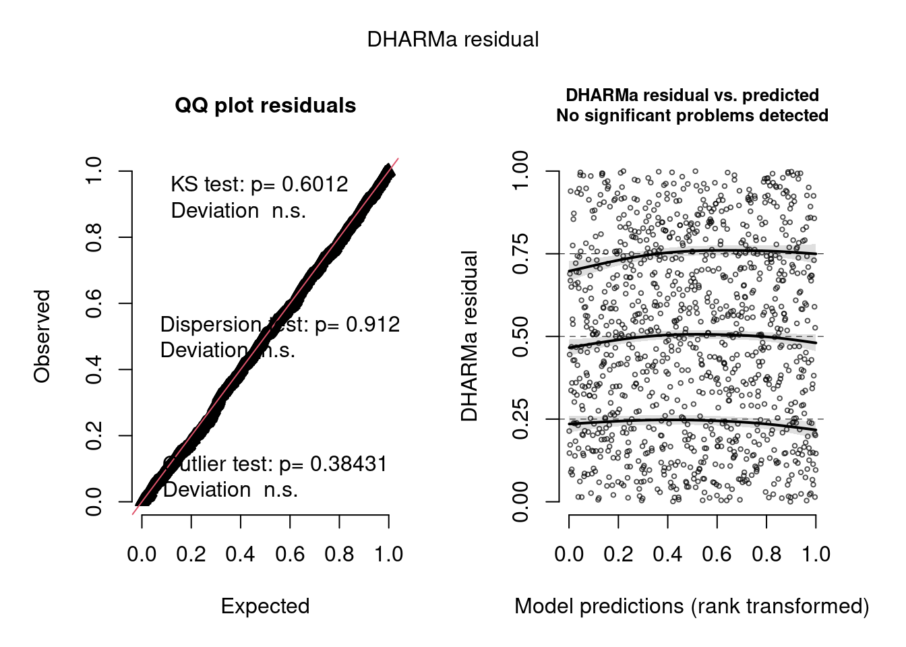

La variable respuesta es presencia/ausencia de larvas, por lo que no corresponde usar un modelo lineal clásico. En su lugar, se utiliza un modelo logístico.
Además, las observaciones no son independientes, ya que están agrupadas por grilla y por visita (grilla-estación). Por este motivo, se utiliza un modelo lineal generalizado mixto (GLMM), que permite incorporar esta estructura mediante efectos aleatorios.
En este caso, se modela la dependencia a nivel de cada visita (grilla-estación), que es donde se observa mayor variabilidad en los datos.
Carga de librerías y base
library(readxl)library(dplyr)
Adjuntando el paquete: 'dplyr'
The following objects are masked from 'package:stats':
filter, lag
The following objects are masked from 'package:base':
intersect, setdiff, setequal, union
library(lme4)
Cargando paquete requerido: Matrix
library(DHARMa)
This is DHARMa 0.4.7. For overview type '?DHARMa'. For recent changes, type news(package = 'DHARMa')
datos <-suppressWarnings(read_excel("aedes_data.xlsx"))dim(datos)
[1] 8772 44
Preparación de datos
Se trabaja con las mismas decisiones tomadas en el análisis exploratorio: grillas tipo Index y criaderos activos, es decir, con volumen de agua mayor a cero.
Donde p es la probabilidad de presencia de larvas. Los términos β representan los efectos fijos de temperatura, pH, volumen y estación. El término u representa la variabilidad entre visitas, es decir, entre combinaciones grilla-estación.
El error no aparece explícito como en un modelo lineal clásico, porque en este caso está dado por la distribución binomial.
Ajuste de modelos
Se comparan dos estructuras de efectos aleatorios: una por grilla y otra por visita grilla-estación.
El modelo con efecto aleatorio por visita presenta un AIC mucho menor, por lo que se utiliza como modelo principal. Esto indica que la estructura grilla-estación captura mejor la dependencia de los datos que la grilla sola.
El modelo por visita (Grid_no:Season) ajusta mejor según AIC, pero el diseño de los datos es desbalanceado. Por eso también se considera el modelo con efectos separados como una alternativa más simple y robusta.
Existe una alta variabilidad entre las visitas (grilla-estación).
Esto indica que la presencia no depende solo de las variables ambientales, sino también del momento y lugar en que se realiza el muestreo (visita).
Es decir, dos mediciones dentro de la misma grilla pero en distintas estaciones pueden comportarse de manera diferente.
Fixed effects
temp_std: -0.505 (p < 0.001)
La temperatura tiene un efecto negativo significativo.
Esto indica que, a medida que aumenta la temperatura, la probabilidad de presencia tiende a disminuir, manteniendo constantes las demás variables.
Calculo de odds: exp(-0.505) = 0.60: las odds de presencia disminuyen aproximadamente un 40%.
logvol_std: +0.430 (p < 0.001)
El volumen de agua tiene un efecto positivo significativo.
lo que indica que criaderos con mayor volumen tienden a tener mayor probabilidad de presencia.
Calculo de odds: exp(0.430) = 1.54: las odds aumentan aproximadamente un 54%.
pH_std: -0.200 (p = 0.06) No hay evidencia fuerte de que el pH influya en la presencia, aunque se observa una leve tendencia negativa.
Season:
april-june: referencia
feb-march: -0.45 (p = 0.31) No se detectan diferencias claras respecto a la estación de referencia.
july-september: 0.48 (p = 0.25) Tampoco se observan diferencias claras, aunque hay una leve tendencia positiva.
october-december: -2.02 (p < 0.001) Probabilidad de presencia significativamente menor respecto a la estación de referencia.
Calculo de odds: exp(-2.02) ≈ 0.13 Esto significa que las odds de presencia son aproximadamente 87% menores que en la estación de referencia (april-june).
Intercepto: -1.50 (p < 0.001) El intercepto representa la log-odds de presencia para la situación de referencia: april-june, con temperatura, pH y log volume en su valor promedio.
En términos de odds: exp(-1.50) ≈ 0.22
Esto indica que, en la condición de referencia, la probabilidad de presencia es baja.
Tabla comparativa de modelos
Elemento
Modelo 1: Grid_no
Modelo 2: Grid_no:Season
AIC
906.7
875.6
Random effect Std.Dev
0.70
1.18
temp_std
-0.316 (p = 0.009)
-0.505 (p = 0.001)
logvol_std
0.424 (p < 0.001)
0.430 (p < 0.001)
pH_std
-0.156 (p = 0.089)
-0.200 (p = 0.062)
Season oct-dec
-1.72 (p < 0.001)
-2.02 (p < 0.001)
El modelo con efecto aleatorio por visita (grilla-estación) presenta un AIC mucho menor, por lo que se selecciona como modelo principal. Además, los efectos mantienen el mismo sentido en ambos modelos, pero el modelo 2 captura mejor la variabilidad asociada al diseño de muestreo.
Diagnóstico de residuos
res <-simulateResiduals(modelo2_presencia)plot(res, cex=0.45)
Warning in newton(lsp = lsp, X = G$X, y = G$y, Eb = G$Eb, UrS = G$UrS, L = G$L,
: Fitting terminated with step failure - check results carefully

Los residuos simulados con DHARMa no muestran desviaciones importantes ni patrones sistemáticos, lo que sugiere un ajuste adecuado del modelo.
Conclusión
El modelo seleccionado es un GLMM binomial con efecto aleatorio por visita grilla-estación. Esta estructura respeta mejor el diseño del muestreo y mejora claramente el ajuste respecto al modelo con grilla sola.
Los resultados indican que la presencia de larvas aumenta con el volumen de agua, disminuye con la temperatura y varía entre estaciones, especialmente con menor presencia en octubre-diciembre.